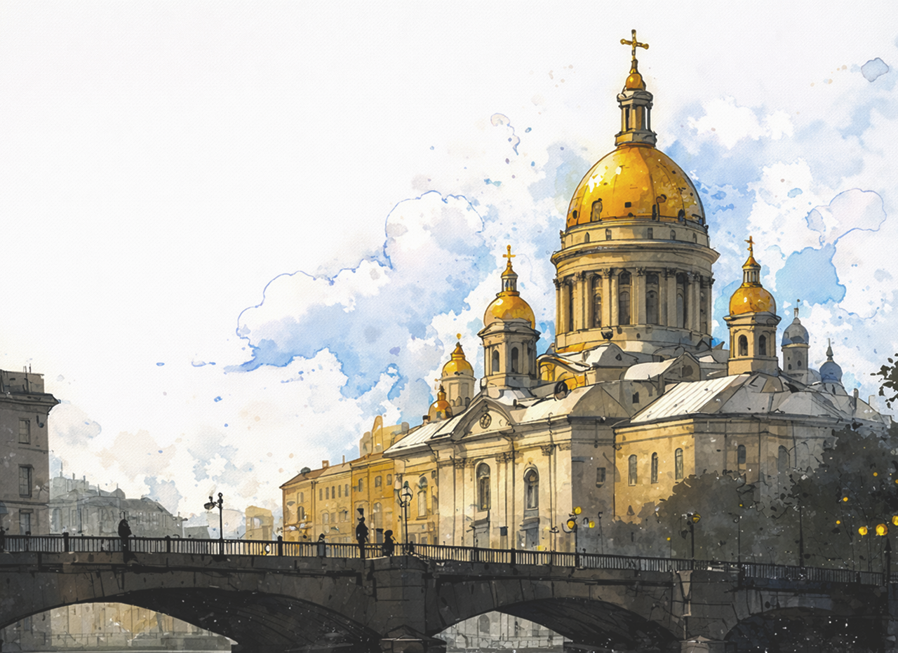
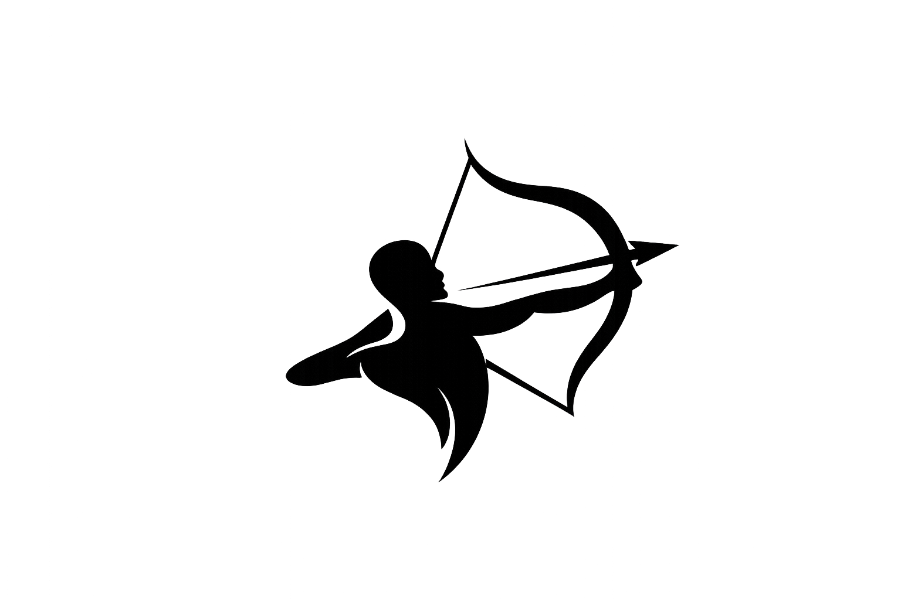

NOSSA GÊNESE
História que se explora
A Lentes do Tempo nasce da ideia de viver a história, não apenas observá-la. Criamos experiências imersivas em 3D e VR que conectam o presente ao passado, mantendo viva a essência dos lugares ao longo do tempo.

Nossa História
Preenchemos as lacunas do esquecimento resgatando narrativas silenciadas. Nossa missão é transformar ruínas e páginas perdidas em experiências presentes, devolvendo ao hoje as vozes e histórias que o tempo tentou apagar. Acreditamos no passado como uma experiência viva. Unindo rigor histórico e tecnologia 3D, iluminamos o que o tempo deixou no escuro e permitimos que você caminhe por monumentos e museus que antes eram inacessíveis.

Missão
Preservar experiências históricas por meio de tecnologias imersivas, permitindo que pessoas explorem o passado de forma imersiva, acessível e emocional.

Visão
Ser uma referência em experiências educacionais imersivas, transformando a forma como a história é ensinada, explorada e vivida no mundo digital.

Valores
Democratização do Saber, Dignidade do Legado, honestidade, inovação, modernidade e Sensibilidade